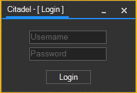
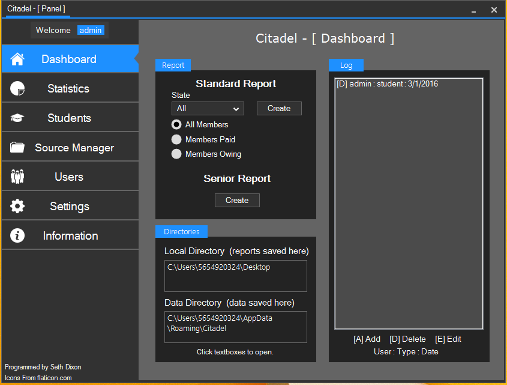
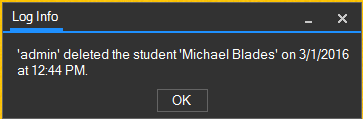
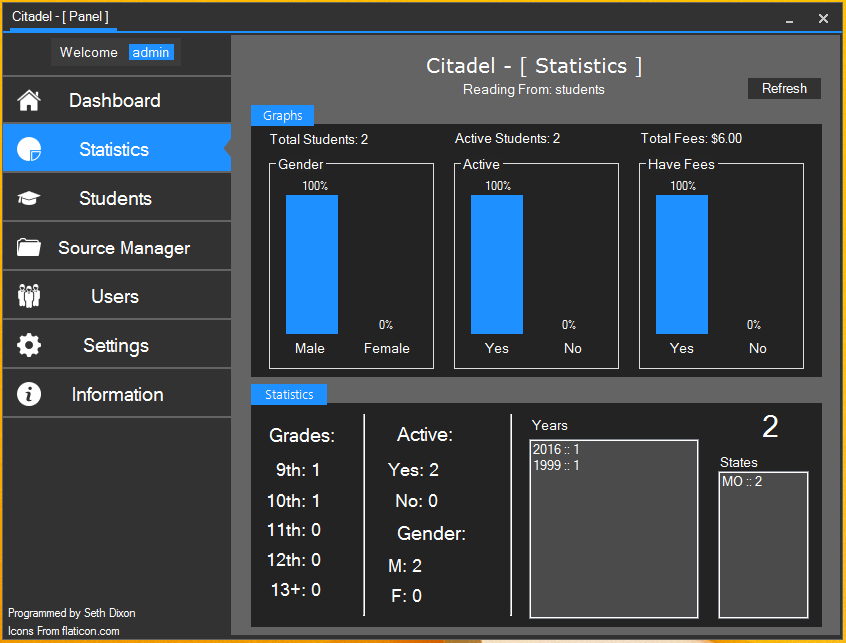
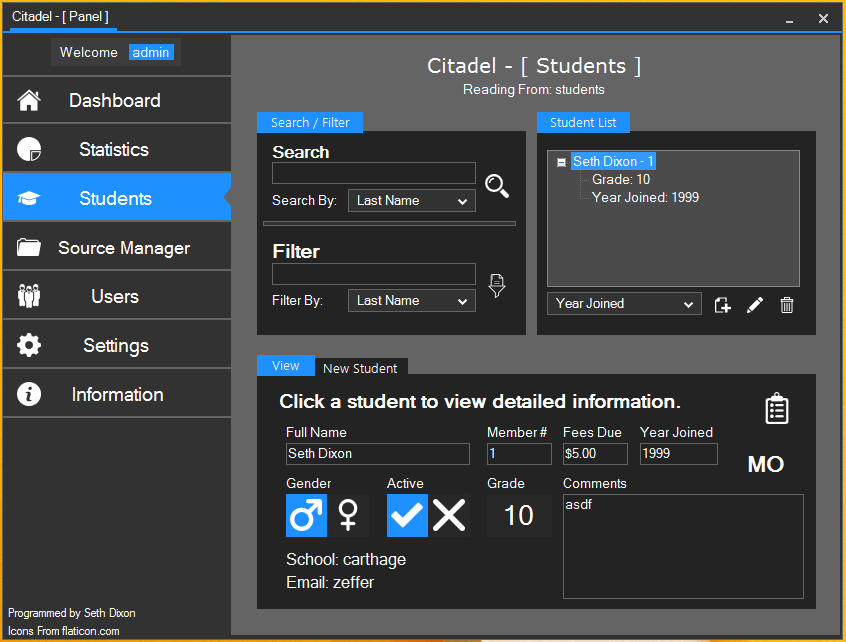
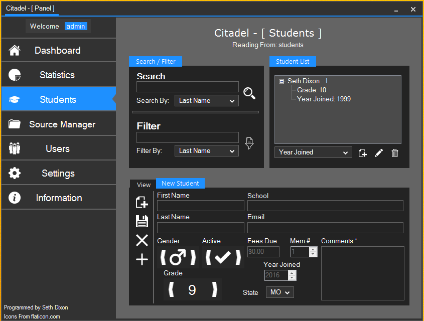
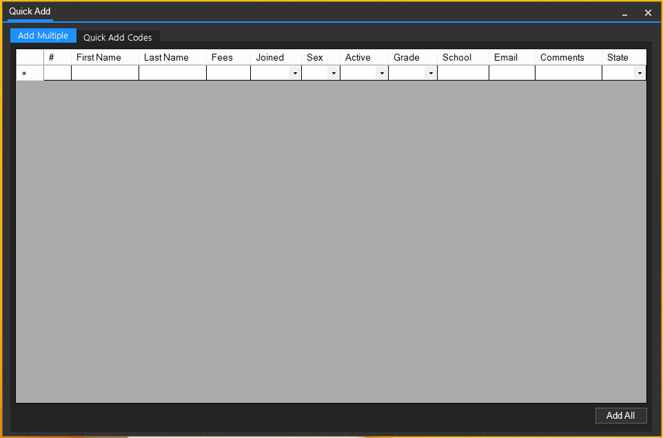
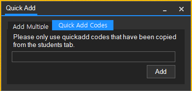
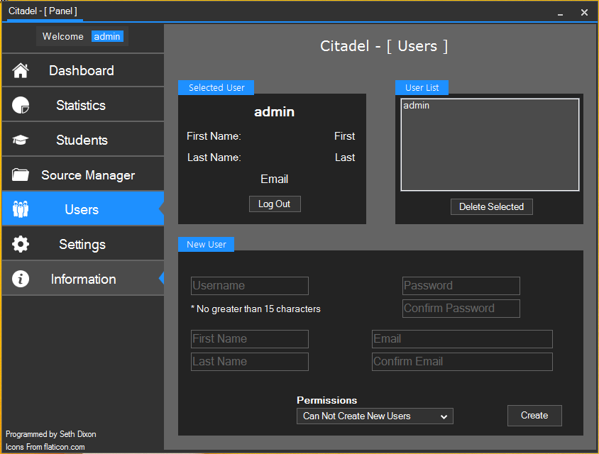
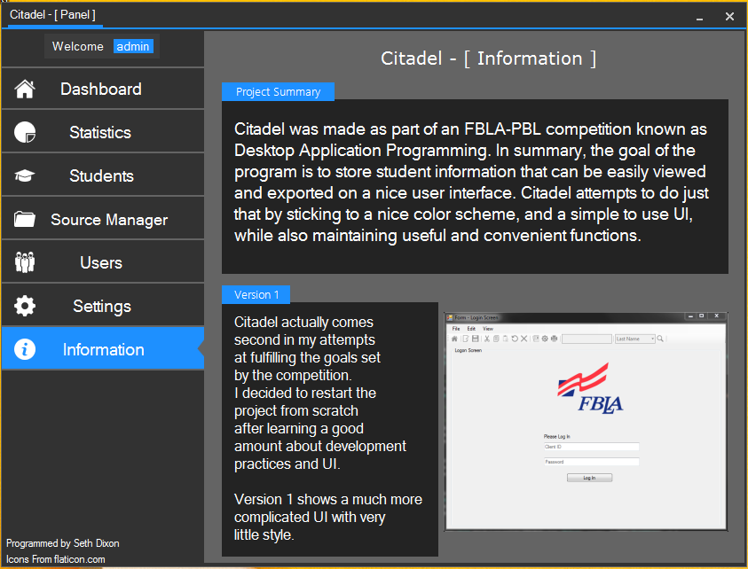

the lib folder must be kept in the directory of the exe in order for the program to launch.
Default login is:
Username: admin
Password: password
this can be changed on the user tab by creating another administrator
account and deleting the default.
Right clicking on the log allows you to refresh or clear the log.
Click an item on the log to get more detailed information.
Students can be added under the new student tab on the 'Students' tab.
After clicking the "New Student" button, the textboxes are enabled.
A faster method is available by clicking the plus button on that same page.
Right clicking the student list allows the user to refresh the list.
The GitHub page can be found here
Login Screen
Dash Board
Log Info
Statistics
Students Tab (first)
Students Tab (second)
Quick Add (first)
Quick Add (second)
Users Tab
Info Tab
Programmed in C# for the FBLA Desktop Application Programming 2015-16 Competition.